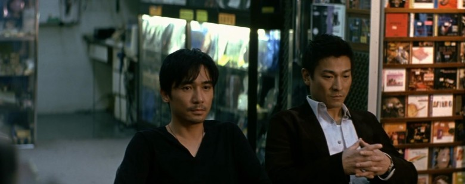

最难的是看不见的教养
所谓教养，就是努力做个更好一点的人。

就是古人讲的慎独。
1 很多年前，余世维在《管理思维》课中讲过一个案例，他说他有一个习惯，每次要离开酒店，他都会把床铺整理一下，把摊在桌面上的东西整理好，尽量把房间恢复成进来时的样子。这样进来清扫的阿姨会对住过的客人刮目相看。
也许客人和阿姨永远不会见面，阿姨高看这一眼也并不会对客人有什么影响，但这就是教养，在看不见的地方更显宝贵。
研究生入学考试后等成绩的那段时间，我在一家麦当劳参加见习经理培训，培训的第一课就是倒餐盘。餐盘上有餐盘纸，只要不是被打湿或者故意破坏的很严重，清理餐盘是很容易的。只消把餐盘倾斜45度角插进垃圾桶的门帘，餐盘纸和餐后垃圾就会全部滑进垃圾桶，自己的手一点也不会沾上。
可据我的观察，就是这简单的动作，国内大部分用餐者都不会做。父母更不太会鼓励孩子吃完麦乐鸡和开心乐园餐之后把餐盘清理了。用好习惯换别人高看一眼？很多人还做不到。
有一次跟同事一起搭飞机出差，吃完飞机餐，看见他把餐盒、纸杯、废弃物都一样一样整理好，铺平，然后把擦过手的餐巾纸摊开，均匀的盖在餐盘上，再交给空姐。我坐在邻座，瞬间觉得自己之前是多么的粗鲁。垃圾本身不是美好的东西，但在丢弃时却可以有教养。
看得见的教养是容易的。因为慑于群体的压力，但凡有些自觉力的人，都能发现自己跟文明的差距。在干净的环境里你不好意思乱丢垃圾；在安静的博物馆你不敢高声喧哗；在有序的队伍中你不好意思插队；在清洁的房间，你不会旁若无人的点燃香烟。所谓的教养，真实存在于环境感染力中。
难的是看不见的教养。在乌合之众中谁能保持优雅和教养？在群体无意识中谁能保持清醒和判断？在舍生取义的时刻，谁还能像一个绅士，把生的机会留给妇孺老人？这不是作秀和异类，这恰恰是最能体现教养作为品德的可贵之处。
更难的是那些“慎独”的教养。日本有一种文化，叫做“不给别人添麻烦”的文化。比如不小心把水洒在了地铁座位上，即使下一站就要下车，也要想办法擦干净，这样下一位乘客就不会觉得麻烦。
虽然没擦可能也不会被人批评，虽然大部分时候并没有机会跟下一位乘客认识，但这种谨慎独处，保有敬畏的态度恰恰是最能考验真假教养的地方。
再比如之前说到的整理房间，清理餐盘和盖上餐巾纸，听起来都是细节小事，难就难在明知道没有“好处”还依然保持，这就比“被称赞的道德模范”好的多，也可持续的多。
2 我来自一个小城市，自登上离家的火车起，就时时警醒，怕自己的言行为父母和原生家庭赢得“没教养”的评价。
小学三年级迷上了说脏话。以为这里有组合词汇、描述细节和发挥创意的空间。其时，十岁的小孩哪里懂男女之事，不过就是学大人样，把性往肮脏了说，把对方的远房女性亲属挨个点名。终于有一次，跟一个同学楼上楼下骂战时被老师遇见。
以为一定会被老师骂并请家长，忐忑了一个早晨。倒是晨会结束，老师把我喊过去，轻描淡写的说，你看这样的脏话要是被路过的人或者院子外的居民听到多不好，人家会怎么看待你？
那次谈话后，我好像突然丧失了骂人的功能，最多也就是写文章时要表达愤怒，不指代具体的用两句“他妈的”。这次和风细雨的批评对我影响至深，那是我第一次有了“觉知力”——觉知到没教养绝对是件值得羞愧的事。试想如果她因为我骂人而骂我，我一定不会那么臣服，也不容易自我反思。
日后知道黄沾有粤语的《不文集》。《玻璃之城》里说港大历史上黄先生是不多可以站在桌上连续说一分钟脏话没有停顿的。我在台大也写过台湾脏话集的文章。其实脏话不是洪水猛兽，还是看你有没有对自己话说出口时的觉知力。
3 我去听钱复和白先勇的讲座，两位先生差不多同龄，都是台湾有影响力的人物。
钱先生西装领带，说的每个词都清晰准确。可能是做过“外交部长”的缘故，他的语言极为得体。到底是“交往”还是“交流”，是“相识”还是“熟悉”，词义都一丝不苟。
白先生是长衫，留美小说家。许子东先生评价他时用了一句话让我非常感动，叫做“从百年中国内忧外患到百年中文内忧外患。”白先生对现代中文有一种忧虑，在我看来，这种忧虑倒不是对华文文学的，而是关于中文语言的教养，正越来越走下坡路。
我在台湾的半年经常遇到台湾人跟我对“暗语”：“我去”，“你妹呀”，“擦”，“滚粗”，“妹子”，“威武”。我每次都把这种方式视为一种侮辱，虽然他们的本意可能只是为了用一些他们认为大陆人常用的语言跟我拉近距离。我通常会正色告诉他们，即便在大陆也不是每个人都这样说话，而且这种语言真的不美。
中文是一种很美的语言，不管是台湾国语还是北京普通话。它的发声方式，咬字归音，气息连贯都堪称世界上最美的语言。如果一定要用一种阴阳怪调，内心鄙视，嘴上却觉得有趣的语言来跟我对话，我会看破他的“敌意”，并坚决回击。
谦逊是一种教养，自尊更是。
4 我承蒙错爱，受到过一些表扬。
大学时去同学家做客，同学的妈妈很喜欢我，说，你真的一点不像阜阳人；课堂上，老师指着我说，You Korean……；在台北，朋友说你还真不像大陆人；尼泊尔的时候，有人问，你是不是“霓虹金”？刚工作的时候，领导说，你真没有在国外留过学？
我感激这些显而易见的表扬，但往往更愿意转个弯来理解。我来自阜阳，一个赃乱差，吏制腐败的城市；我来自中国，一个公共场合有人抽烟，餐馆和地铁里有人大声喧哗，男人和老人、女人、孩子抢夺资源的国家；我没有留过学，我所在的学校，大家在图书馆占座位，没人关心社会议题，也没人质疑学校剥夺学生尊严的恶行。
是的，我来自这里，也曾经想过离开这里，变得跟这里不一样。但在台湾的最后两个月，我渐渐明白，人必须有对土地的归属感，这带来身份认同。人只有连接自己的土地才有能量。
越是每一次的失望和疏离，越要用更多的爱绑定这种关系。显见的，这种选择注定将面临无比艰辛的道路。
5 即便没能改变，但至少努力做一个有教养的人。西方和日本最值得尊敬的不是科技和国力，而是教养汇聚成的社会尊严氛围。
我路过地铁和火车站安检处的时候，看着行李从扫描仪里连滚带爬的翻出来，乘客要像狗一样弯着腰去捡起来。一个有教养的设计者应该把这个台面提高40公分，让每个人可以有尊严的拿起东西；我在金台路等地铁，听见两个法国人在聊天。他们用鄙夷的眼神看着突然插到他们前头的两个人，然后用一种车厢里很少有人懂的语言品评这件事。他们的嘲笑刺痛了我，就像有人问我你们中国人现在还留辫子吗一样。我从来不相信一个外国人会像本国人一样爱这个国家和国家的人民，他们爱的是机会和GDP增速。
教养不是西方价值观的蛊惑，中国2000多年的春秋时代就强调“礼”。那时候西方很多国家还在茹毛饮血。“不食嗟来之食”，“慎独”，“黄钟大吕”都显示中华文化是世界上最早强调教养的。
教养是一种普世价值：照顾妇女，体谅周到，谈吐文明，举止得体，平静时保持微笑，危难时保持冷静，有爱的能力，重视家庭。泰坦尼克号沉船时，并不是每个人都在求生，那些看起来更能改变世界的男人把生的希望让给了女人和小孩；那些可以独自逃生的妇女选择把人生最后的时刻留给爱人；那些有教养的老夫妇选择长眠海底；那些工作人员选择在沉船上坚守到最后一刻……
6 教养跟穷富无关。飞法国的头等舱上也有没教养的行为，偏远乡村的田埂上人们也知道礼义廉耻。
教养不是道德规范，也不是小学生行为准则，其实也并不跟文化程度，社会发展，经济水平挂钩，它更是一种体谅，体谅别人的不容易，体谅别人的处境和习惯。
所谓教养，简单了说，就是不管你的出身和背景，都努力做个更好一点的人。
比刚刚好一点的人，不因为自己让别人觉得不舒服，这就是教养的简单道理。